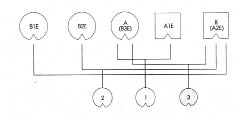

B Baba, annenin ikinci eşi (A2E)
A Anne, babanın üçüncü eşi (B3E)
A1E Annenin ilk eşi, 1’in babası
1 Annenin ilk eşinden çocuğu, kız
B1E Babanın ilk eşi
B2E Babanın ikinci eşi, 2’nin annesi
2 Babanın ikinci eşinden çocuğu, kız
3 Anne ile babanın ortak çocuğu, kız (=Klara)
HELLINGER Klara’ya Şimdi köken aileni diziyoruz. Kimlerden oluşuyor?
KLARA Babam, annem, ben, babamın ilk eşi, ondan tanımadığım bir kızı olan ikinci eşi. Ama bu kadınla evli değildi. Sonra annemin evliliğinden önce bir kız doğurduğu adam ve kız.
HELLINGER Kardeşlerin sırası nasıl?
KLARA En büyüğümüz annemin ilk çocuğu, sonra babamın ilk çocuğu, en küçükleri de ben. Babamın ilk çocuğu dünyaya geldiğinde o daha ilk karısıyla evliymiş.
HELLINGER Annen, çocuğun babasıyla neden evlenmemiş?
KLARA Annemi tanıdığında adam nişanlıymış. Çocuğun doğumunun ardından Doğu Almanya’ya geri dönmüş.
HELLINGER Orada evlenmiş mi?
KLARA Sanıyorum evet.
HELLINGER Başka çocukları var mı?
KLARA Var galiba.
HELLINGER O halde büyük ablanın, tanımadığı kardeşleri de var. Hem babasını hem de kardeşlerini gidip görmesi önemli.
KLARA Bunu yapmaz.
HELLINGER Sana bunun üzerine bir öykü anlatayım: